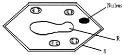
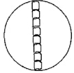
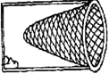
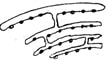
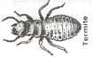
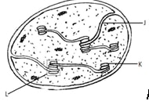
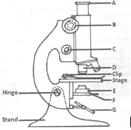
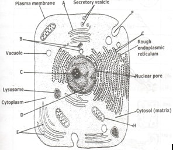

1. What is biology? (1 mark)
2. Give two skills gained by a student learning Biology. (2 marks)
3a)Name the unit of classification that has the least organisms. (1 mark)
b)State the application of Binomial nomenclature in naming organisms. (1 mark)
4.What is the importance of using a hand lens in classification of organisms (1 mark)
5.State two main branches of biology. (2 marks)
6.Define each of the following terminologies as used in biology : (2 marks)
a). Ecology
b). Anatomy
7.What characteristics of living organisms is represented by the following characteristics:
a)A cat producing kittens. (1mk)
b)A girl dropping a hot pan. (1mk)
c)The exhalation of carbon (IV) oxide. (1mk)
8. The diagram below represents a plant cell.

(a) Name a carbohydrate which forms part of the structure labelled S. (1mark)
(b) State two functions of the part labelled R. (2 marks)
(c) Name two structures present in the diagram but absent in the animal cell (2marks)
9 a) An electron microscope has a much greater resolving power than a light microscope. Explain the meaning of the term resolving power. (1 mark)
b) Give a reason why an electron microscope cannot be used to study life specimen. (1 mark)
10. What is taxonomy? (1mark)
11. Give two reasons why classsification is important in biology. (2marks)
12. (a) Distinguish between growth and development. (2marks)
(b) State the importance of growth in living organisms. (1mark)
13.During a practical lesson to estimate the size of a cell, using the sketch below which some students observed, calculate the length of one cell in micrometers given that the field of view was 8mm wide. (3 marks)

14. a) What is meant by the term Entomology. (1 mark)
b) The diagram below represents a certain apparatus used by biology students.

(i) Name the apparature above. (1 mark)
(ii) State the role of the apparatus named in b) (i) above. (1 mark)
15. Black jack (Bidens pilosa) belongs to the family Compositae.
What is it’s:
Genus. (1 mk)
Species. (1 mk)
16. a) Differentiate between prokaryotic and eukaryotic cells. (1 mk)
b) i) identify the organelle represented by the diagram below. (1 mk)

ii) State the function of the organelle identified in 2b(i) above. (1 Mark)
17. If a light microscope had an eye piece lens of X25 and an objective lens of X40, what would
the total magnification be? (2 mks)
18. a. State the importance of each of the following process in living things. (3 mks)
i. Respiration
ii. Gaseous exchange
iii. Reproduction
b. Apart from the characteristics of living things mentioned in (a) above, state any other 4other characteristics common in living things. (4mks)
19. a). Give a reason why each of the following steps are followed when preparing cross sections
of a leaf for examination under a microscope:(4mks)
b)Cutting very thin sections
c)Using sharp razor blade (scalpel) during cutting.
d)Placing the sections in water
e)Staining the sections with iodine before observing under a microscope.
20. Calculate the magnification of the drawing of the termite below given that the actual length of the termite is 0.9cm long .Show your working (2mks)

21. plasmodium Falciparum are transmitted by a mosquito.
(a) Identify two mistake made in writing the scientific name (2mks)
(b) Can the above organisms interbreed? Give reasons (2mks)
(c) Rewrite the above scientific name properly (1mk)
22.Peter was using a light microscope to view onion cells with lens combination of eye piece lens X10 and objective lens X20.
a)Calculate the total magnification. (1 mk)
b)If he changed the objective lens magnification to X40, would the cells appear bigger or smaller? Explain. (2 mks)
23.Below is a structure found in plants.

Name the organelle. (1 mk)
What is the role of the organelle you have named in (a) above. (1 mk)
Name the parts labeled J and L. (3 mks)
24.Name the five major kingdom of classification (5mks)
25. The diagram below represents the structure of a light microscope. Study it and answer the
questions that follow.

a)Name the parts of the microscope labeled A to G. (7 mks)
b)State the functions of each of the parts marked E and F. (2 mks)
c)Which part of the microscope (use letter symbols):
i. Contributes to the magnification of the specimen. (1 mk)
ii. Is used to move the body tube over very small distances when observing under
high power magnification. (1 mk)
e)While trying to observe a specimen under a microscope, a student failed to see the
field of view. Suggest two possible causes of this. (2 mks)
26. The diagram below shows a cell as seen under a microscope.

a)i. Is this observation under a light or an electron microscope? (1 mk)
ii. Give a reason for your answer. (1 mk)
i. Is this an animal or a plant cell? (1 mk)
ii. Give a reason for your answer in (b) (i) (1 mk)
b)Name the parts labeled A to H. (5 mks)
c)State the functions of each of the parts marked A, B, C, D, E, F, H. (6 mks)
27. Briefly and adequately explain how plants compensate for lack of movement in a constantly changing environment. (2 marks)
Field of science that deals with the study of living things;
2.)
Measuring; observing; calculation; identification, recording. (Any two)=2 marks)
3.)
a) Species;
b) Used in botanical gardens; museum; animal orphanage in a zoo(any one) (1 mark)
4.)
Enlarges the image of the specimen
5.)
Botany and zoology
6.)
(a)Ecology
This is the branch of biology that deals with the study of inter relationships between organisms and their environment.
(b)Anatomy
This is the branch of biology that deals with the study of structures of living things/ internal structures of living things.
7.)
(a) Reproduction
(b) Sensitivity/Irritability
(c) Gaseous exchange
8.)
a) Cellulose;
b) Store sugars, salt and food; carry out osmoregulation by inducing osmotic gradient that bring about water movement; maintain the shape of the cell;
c) Cell wall; and chloroplast;
9.)
a) Ability to distinguish two close points
b) Specimen is placed in a vacuum hence it will die.
10.)
Science of classification;
11.)
Enable the taxonomists to place origin in their correct group for reference;
Help us understand the evolutionary relationship between different organisms;
Help to arrange information about living things in orderly manner;
Grouping bring together living organisms with similar characteristics but separate those with different;
12.)
(a) Growth is an irreversible increase in size and mass while development is irreversible change in
complexity of the structure of the living things.
(b) In order to attain maximum size and mass which are essential for their body function;
13.)
Length of a cell = field of view in microns / no of cell (3 marks)
no. of cells = 8 x 1000/8 =100mm ;
14.)
(i) a) It is the study of insects. (1 mark)
b) Bait trap (1 mark)
(ii) To attract and trap small animals;accept examples like rats
15.)
a. Bidens
b. Pilosa
16.)
Magnification = objective lens x eye piece lens;
= 25 x 40
= X1000;
17.)
a)Prokaryotic cells lack nuclear membrane while eukaryotic cell has nuclear membrane
b)i Rough endoplasmic reticulum
ii Protein synthesis; transportation of proteins
18.)
(a)i The resultant energy is used for various metabolic(life sustaining)sustaining activities of the organism
ii) provide the oxygen needed for respiration and expels the resultant carbon IV oxide from body tissues
iii)It is essential for continued existence of species and growth of populations
(b) movement ; nutrition; excretion; growth and development ; irritability
19.)
a)To allow light to penetrate (pass through) the sections in order for magnification to be
Possible.
b) This also avoids (prevents) overlapping of tissues.
c )-To avoid destruction (distortion) of tissues hence obtain intact tissues of specimens.
d)To maintain turgidity and shapes of the cells and hence avoid desiccation (drying up)
which may cause death of tissues.
e)To create contrast and make different structures of the specimen more distinct for better
view;
drawing length = 3.0 =X3
20.)
Magnification= object length 0.9
21.)
(a) The genus name was not started with a capital letter and species name is started with capital letter
(b) No because they don’t belong to the same species.
(c) Plasmodium falciparum
22.)
(a)X20 X X10 = X200 (Rej. 200)
(b) Bigger – Higher magnification
23.)
(a)Chloroplast
(b) Site for photosynthesis
(c) J – Lamella (Rej. Lamellae); L – Granum (Rej. Grana)
24.)
monera; proctoctista;fungi; plantae; animalia
25.)
a. A: eyepiece lens; B: coarse adjustment knob; C: fine adjustment knob; D: objective lens;
E: condenser lens; F: diaphragm; G: mirror;
b..E: concentrates and directs light onto the field of view;
F: regulates the amount of light entering the condenser (part E)
(i) part A; part D;
(ii) part C;
The objective lens (part D) was not clicked into position;
-The diaphragm (part F) was completely closed;
26.)
a.)
i. An electron microscope;
ii. Organelles are visible;
b.)
i. An animal cell;
ii. Absence of chloroplast; sap vacuole; and chloroplasts;
A: Golgi bodies; B: centrioles; C: nucleolus; D: nucleus; E: smooth endeplasmic reticulum;
F: micropinocytotic veside; G: ribosomes; H: mitochondrion;
d.)
A: Packing and transport in vesicles of materials such as enzymes, glycoproteins etc.
- Secretion of synthesized proteins and carbohydrates.
- modification of materials eg. It adds sugars to proteins to make glycoproteins.
- processing of cisternae.
- Are often involved in lysosomes formation.
B: - Formation of spindle fibres that facilitate cell division;
- Formation of celia and flagella in cells where they occur;
C: Synthesis of ribosomes;
D: Controls all cellular activities.
E: Synthesis and transport of lipids;
F: Pinocytosis; ie. engulfing and digesting liquid food particles;
H: Site for respiration;
27 .)
Being autotrophic green plants make their own food using sunlight energy;
They respond to external stimuli by limited movements; such as tropism and nastism;